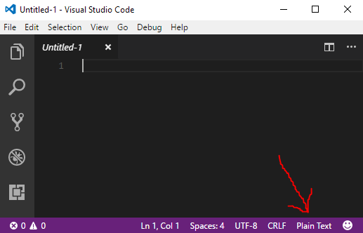
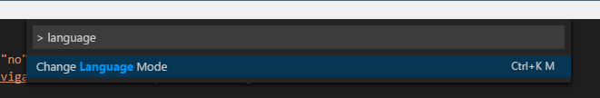

Set language for syntax highlighting in Visual Studio Code
Before the confusion begins, this question is about Code, the new lightweight Visual Studio Editor. You can get it from here: https://code.visualstudio.com/
I have a textfile (.txt) with CSS in it and want to get syntax hightlighting.
You can open the command palette with ctrl+shift+p. But there you
can not set syntax like in Sublime.
Is there any other way to get the CSS coloring in from my textfile?
Answer
In the very right bottom corner, left to the smiley there was the icon saying "Plain Text". When you click it, the menu with all languages appears where you can choose your desired language.

Suggest
Press Ctrl + K``M and then type in (or click) the language you want.
Alternatively, to access it from the command palette, look for "Change Language Mode" as seen below:
